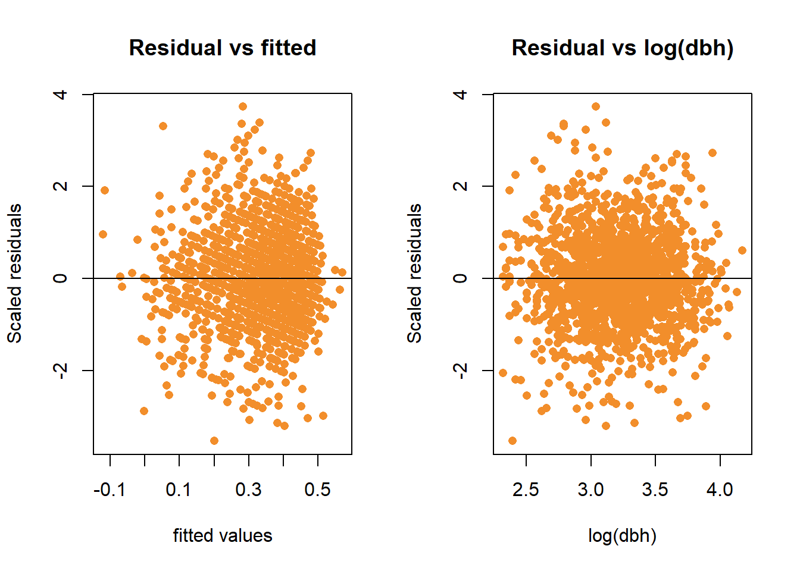
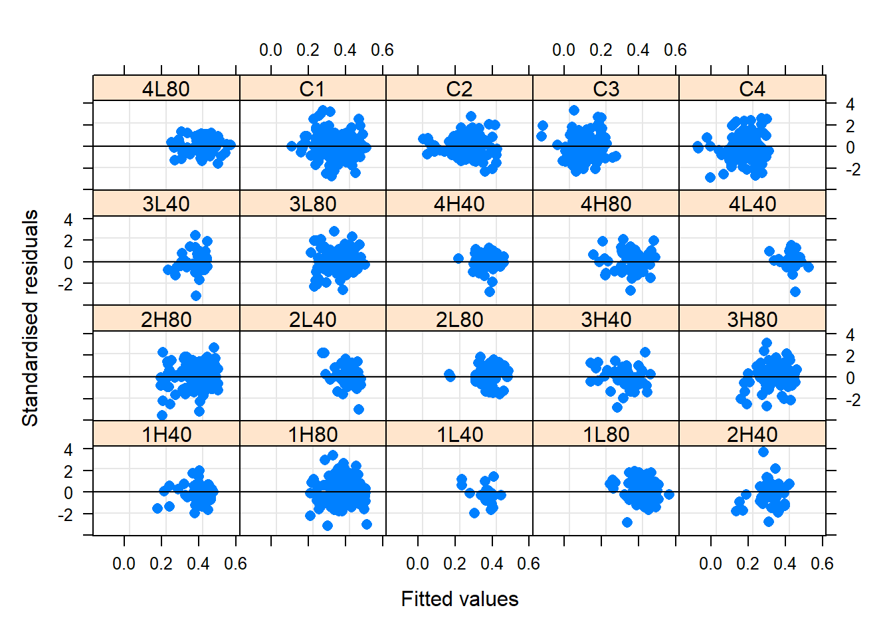
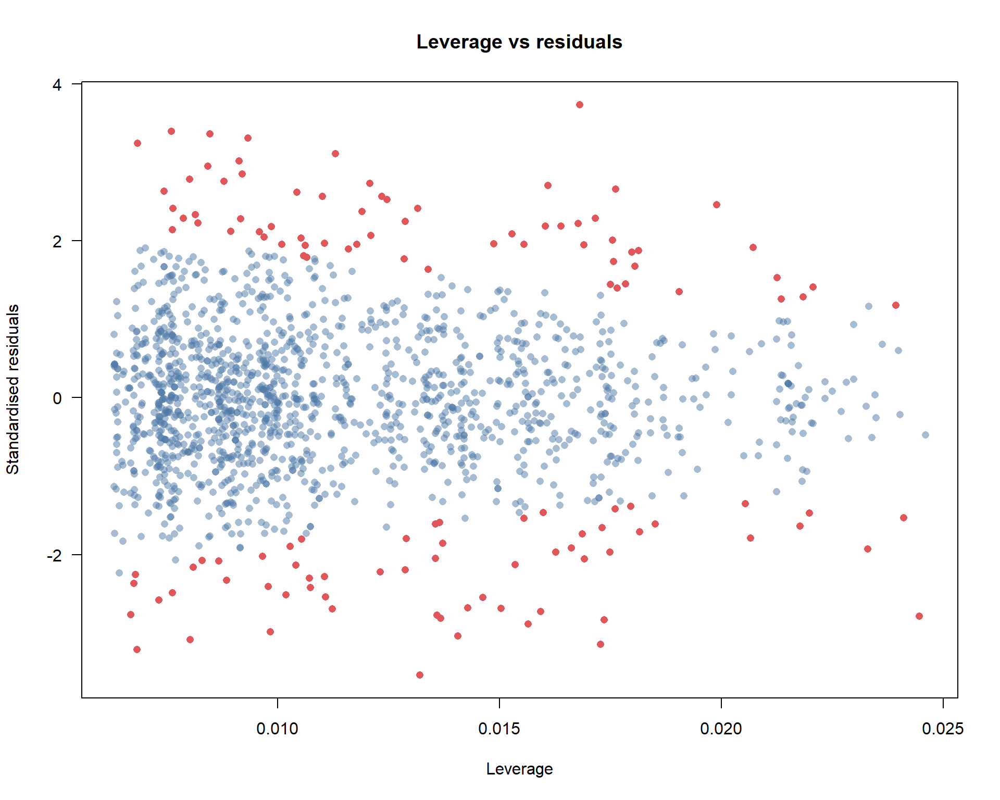

Modeling height growth and predicting missing heights
- Introduction
- Defining trees of interest
- Assessment of linear relationship between dbh and height increment
- Global Model
- Optimal random effects specification
- Choosing a submodel for fixed effects
- Estimated marginal means
- Predictions
- Validation of selected models
- Homogeneity of random group residuals
- Normality of residuals
- Leverage and Cooks distance
- Random effects distribution
- Spatial autocorrelation
- Temporal autocorrelation
library(lme4)
palette("Tableau 10")Introduction
I need to predict missing heights in 2018 in order to complete other steps of the analysis and provide better summary data. To accomplish this, I will model height increment as a function of the continuous predictor, dbh, as well as a combination of nested groupings: year, treatment, plot, and species. Additionally, height increment response is of interest in it’s own right. While height growth in trees is less responsive to conditions then diameter, it would be important to see whether there is a difference detected between treatments.
Defining trees of interest
First, I’ll define the dataset of interest as only years 2013 and 2018 observations of healthy, non-leaning trees. I’ll also define three other alternative treatment groupings for consideration: thinned/unthinned, H/L/C (thinning type), and 40/80/C (thinning intensity).
test_d <- d_l %>%
# only use unbroken live sese or psme from 2018
filter(
spp %in% c("SESE3", "PSMEM"),
year %in% c("18", "13"),
status == 1,
!get_cond(2, 3, 5),
!is.na(ht_inc) & !is.na(dbh)
) %>%
mutate(
treatment2 = str_extract(treatment, "C|H|L"),
treatment3 = str_extract(treatment, "C|40|80"),
treatment4 = if_else(str_detect(treatment, "C"), "unthinned", "thinned"),
year = factor(year, levels = c("13", "18"), ordered = FALSE)
) %>%
select(starts_with("treatment"), spp, year, tree_id, dbh, ht_inc, plot, x, y)Assessment of linear relationship between dbh and height increment
We are pretty sure that height growth is correlated with diameter, in that larger trees are capable of more height growth than smaller ones. We also think that this relationship is probably not linear. I will take a look at log and square root transformations of dbh for linear prediction of height growth.
m0 <- lm(ht_inc ~ dbh * treatment * spp, data = test_d)
m1 <- update(m0, . ~ . - dbh + sqrt(dbh))
m2 <- update(m0, . ~ . - dbh + log(dbh))
test_d %>%
ggplot(aes(x = dbh, y = ht_inc, color = spp)) +
geom_point(aes(color = spp), alpha = .5) +
facet_wrap(vars(treatment)) +
geom_line(aes(y = predict(m0), linetype = "linear"), size = 1) +
geom_line(aes(y = predict(m1), linetype = "sqrt"), size = 1.25) +
geom_line(aes(y = predict(m2), linetype = "log"), size = 1.25) +
scale_color_manual(
values = palette(),
name = "",
breaks = c("PSMEM", "SESE3", "linear", "sqrt", "log"),
)
It doesn’t look like it matters a whole lot with this noisy data. I’m going to use log transformation.
Global Model
The next step is going to specify our likely global model. In general, we want to answer questions about how a given treatment affected growth for each species. There may have also been different responses between years. This will be a mixed model and I want to control for the random effect of plot and tree_id. The global model will include log(dbh) as well as the categoricals: treatment, species, year, and all their interactions. Resulting in the fixed effects:
ht_inc ~ log(dbh) * treatment * spp * year
Optimal random effects specification
We will determine the optimal random effects structure using the global fixed effects structure.
library(nlme)
library(MuMIn)
f0 <- formula(ht_inc ~ log(dbh) * treatment * spp * year)
m0 <- gls(f0, data = test_d, method = "REML")
m1 <- lmer(update(f0, ~ . + (1 | plot)), REML = TRUE, data = test_d)
m2 <- update(m1, ~ . + (1 | tree_id))
m3 <- update(m2, ~ . + (0 + log(dbh) | plot))
AICc(m0, m1, m2, m3)## df AICc
## m0 41 998.2696
## m1 42 969.3265
## m2 43 971.4429
## m3 44 973.5622The optimal random effects structure, judged by AIC (and using fixed effects coefficients determined by REML), includes the random intercept only for plot. We will assume this random effects structure in all further models.
Choosing a submodel for fixed effects
The next step is to define a list of potential submodels for fixed effects to determine the optimal structure. These will be determined for Douglas-fir and redwood separately so I’ll start by splitting the two datasets.
sese_d <- subset(test_d, spp == "SESE3")
psme_d <- subset(test_d, spp == "PSMEM")
fl <- list(
ht_inc ~ log(dbh) + (1 | plot),
ht_inc ~ log(dbh) + treatment + (1 | plot),
ht_inc ~ log(dbh) + treatment + year + (1 | plot),
ht_inc ~ log(dbh) * treatment + year + (1 | plot),
ht_inc ~ log(dbh) + treatment * year + (1 | plot),
ht_inc ~ log(dbh) * treatment * year + (1 | plot)
)
# tibble(models = sapply(fl, deparse)) %>%
# kbl(caption = "List of submodels to test for each species") %>%
# kable_styling(full_width = FALSE)I use AICc to assess the fit of each of the submodels with coefficients estimated with ML in order to compare among various fixed effects.
get_aic(fl, data = psme_d) %>%
kbl(caption = "AICS for set of Douglas-fir submodels") %>%
kable_styling(full_width = FALSE)| row | formula | aicc | rmse |
|---|---|---|---|
| 5 | ht_inc ~ log(dbh) + treatment * year + (1 | plot) | 536.3 | 0.301 |
| 2 | ht_inc ~ log(dbh) + treatment + (1 | plot) | 542.6 | 0.303 |
| 3 | ht_inc ~ log(dbh) + treatment + year + (1 | plot) | 543.4 | 0.303 |
| 6 | ht_inc ~ log(dbh) * treatment * year + (1 | plot) | 543.9 | 0.299 |
| 1 | ht_inc ~ log(dbh) + (1 | plot) | 547.9 | 0.303 |
| 4 | ht_inc ~ log(dbh) * treatment + year + (1 | plot) | 549.6 | 0.302 |
get_aic(fl, data = sese_d) %>%
kbl(caption = "AICS for set of redwood submodels") %>%
kable_styling(full_width = FALSE)| row | formula | aicc | rmse |
|---|---|---|---|
| 2 | ht_inc ~ log(dbh) + treatment + (1 | plot) | 298.5 | 0.332 |
| 1 | ht_inc ~ log(dbh) + (1 | plot) | 298.9 | 0.329 |
| 3 | ht_inc ~ log(dbh) + treatment + year + (1 | plot) | 299.0 | 0.331 |
| 6 | ht_inc ~ log(dbh) * treatment * year + (1 | plot) | 301.0 | 0.320 |
| 5 | ht_inc ~ log(dbh) + treatment * year + (1 | plot) | 301.3 | 0.328 |
| 4 | ht_inc ~ log(dbh) * treatment + year + (1 | plot) | 303.1 | 0.329 |
Based on this, I will select model five for Douglas-fir because it is substantially better than the next best model. For redwood, I select model one because it is almost equivalent to the next better model, but is simpler.
sese <- lmer(fl[[1]], data = sese_d, REML = TRUE)
psme <- lmer(fl[[5]], data = psme_d, REML = TRUE)
# augment data with fitted, residual cooks distance and leverage
augment1 <- function(dat, mod) {
dat %>% mutate(
fitted = fitted(mod),
resid = resid(mod, type = "pearson", scaled = TRUE),
cooks = cooks.distance(mod),
lev = hatvalues(mod)
)
}
sese_d <- augment1(sese_d, sese)
psme_d <- augment1(psme_d, psme)Estimated marginal means
First, the model for sese was not fit with any factors, so its only mean is the prediction for the mean dbh
library(emmeans)
emmeans(sese, ~log(dbh))## dbh emmean SE df lower.CL upper.CL
## 31.7 0.324 0.0247 17.2 0.272 0.376
##
## Degrees-of-freedom method: kenward-roger
## Confidence level used: 0.95Next, psme was fit with factors (treatment * year) we can do pairwise comparisons, or, alternatively, treatment vs control comparisons.
psme_em <- emmeans(psme, ~ treatment + year)
pairs(psme_em, by = "year")## year = 13:
## contrast estimate SE df t.ratio p.value
## C - H40 -0.0696 0.0635 22.8 -1.095 0.8071
## C - H80 -0.2349 0.0555 14.0 -4.232 0.0063
## C - L40 -0.1106 0.0625 22.5 -1.769 0.4152
## C - L80 -0.1729 0.0540 12.6 -3.201 0.0469
## H40 - H80 -0.1653 0.0657 25.9 -2.517 0.1176
## H40 - L40 -0.0410 0.0703 34.1 -0.583 0.9768
## H40 - L80 -0.1033 0.0644 23.9 -1.605 0.5087
## H80 - L40 0.1243 0.0644 25.2 1.930 0.3279
## H80 - L80 0.0620 0.0568 15.3 1.092 0.8079
## L40 - L80 -0.0623 0.0630 23.1 -0.988 0.8578
##
## year = 18:
## contrast estimate SE df t.ratio p.value
## C - H40 -0.1070 0.0774 50.0 -1.383 0.6412
## C - H80 -0.0485 0.0666 27.3 -0.728 0.9481
## C - L40 -0.0306 0.0812 52.5 -0.377 0.9956
## C - L80 -0.1605 0.0711 36.5 -2.258 0.1819
## H40 - H80 0.0586 0.0771 48.3 0.760 0.9408
## H40 - L40 0.0764 0.0891 74.6 0.857 0.9114
## H40 - L80 -0.0535 0.0809 60.0 -0.661 0.9639
## H80 - L40 0.0179 0.0808 50.6 0.221 0.9995
## H80 - L80 -0.1120 0.0709 35.4 -1.581 0.5191
## L40 - L80 -0.1299 0.0845 61.8 -1.538 0.5423
##
## Degrees-of-freedom method: kenward-roger
## P value adjustment: tukey method for comparing a family of 5 estimatescontrast(psme_em, "trt.vs.ctrl1", by = "year")## year = 13:
## contrast estimate SE df t.ratio p.value
## H40 - C 0.0696 0.0635 22.8 1.095 0.6328
## H80 - C 0.2349 0.0555 14.0 4.232 0.0030
## L40 - C 0.1106 0.0625 22.5 1.769 0.2627
## L80 - C 0.1729 0.0540 12.6 3.201 0.0246
##
## year = 18:
## contrast estimate SE df t.ratio p.value
## H40 - C 0.1070 0.0774 50.0 1.383 0.4480
## H80 - C 0.0485 0.0666 27.3 0.728 0.8397
## L40 - C 0.0306 0.0812 52.5 0.377 0.9646
## L80 - C 0.1605 0.0711 36.5 2.258 0.0989
##
## Degrees-of-freedom method: kenward-roger
## P value adjustment: dunnettx method for 4 testsA plot of estimated means by treatment and year can reveal patterns in the interactions
emmip(psme_em, treatment ~ year)
The author of emmeans is opposed to the use of “significance” letters on estimated means plots and suggests this plot as an alternative.
pwpp(psme_em, by = "year")
I’m a little bit confused about
bind_rows(psme_d, sese_d) %>%
ggplot(aes(y = ht_inc, x = year, color = treatment, group = treatment)) +
stat_summary(fun = mean, geom = "line", aes(linetype = "observed")) +
stat_summary(aes(y = fitted, linetype = "predicted"), fun = mean, geom = "line") +
facet_wrap(vars(spp)) +
scale_color_manual(values = palette()) +
scale_linetype_manual(
values = c(2, 1),
name = "",
breaks = c("observed", "predicted")
)
with(psme_d, interaction.plot(year, treatment, ht_inc))
with(sese_d, interaction.plot(year, treatment, ht_inc))
Predictions
Predicted heights fit with a loess smoother, not a great plot.
test_d <- left_join(
test_d,
bind_rows(sese_d, psme_d) %>% dplyr::select(tree_id, year, fitted),
by = c("tree_id", "year")
)
ggplot(test_d, aes(x = dbh, y = ht_inc)) +
geom_smooth(aes(linetype = spp)) +
facet_wrap(vars(treatment))
Here I so the differences between each plot, these are avearaged over both years, another noisy plot
palette("tableau10")
ggplot(test_d, aes(x = dbh, y = ht_inc)) +
geom_smooth(aes(linetype = spp, color = str_extract(plot, "\\d")), method = "lm", formula = y ~ log(x), se = FALSE) +
facet_wrap(vars(treatment)) +
scale_color_manual(values = palette())
Validation of selected models
Next I will perform some model validation. I’ll start by looking at residuals vs fitted and residual vs continuous predictor (log(dbh)) and for the Douglas-fir model, the residuals for each combination of the categorical predictors: treatment and year.
par(mfrow = c(2, 2))
plot(
resid ~ fitted,
data = sese_d,
pch = 16,
xlab = "fitted values",
ylab = "Scaled residuals",
main = "Residual vs fitted for SESE",
col = 2
)
abline(0,0)
plot(
resid ~ fitted,
data = psme_d,
pch = 16,
xlab = "fitted values",
ylab = "Scaled residuals",
main = "Residual vs fitted for PSME",
col = 1
)
abline(0,0)
plot(
resid ~ log(dbh),
data = sese_d,
xlab = "log(dbh)",
ylab = "Scaled residuals",
main = "Residual vs log(dbh) for SESE",
col = 2,
pch = 16
)
abline(0,0)
plot(
resid ~ log(dbh),
data = sese_d,
xlab = "log(dbh)",
ylab = "Scaled residuals",
main = "Residual vs log(dbh) for PSME",
col = 1,
pch = 16
)
abline(0,0)
with(
model.frame(psme),
boxplot(
resid(psme, type = "pearson") ~ treatment + year,
xlab = "by treatment and year",
ylab = "Residuals",
main = "Distribution of residuals by treatment and year for PSME"
)
)
Homogeneity of random group residuals
I can check that random group residuals are homogenous
plot(
psme,
resid(., scaled=TRUE) ~ fitted(.)| plot,
abline = 0,
pch = 16,
xlab = "Fitted values",
ylab = "Standardised residuals"
)
Normality of residuals
Checking for normality of residuals. The tails are perhaps a bit fat for PSME. I’m not sure if this requires attention or not.
par(mfrow = c(1, 2))
qqnorm(resid(psme), pch=16, col = 1, main = "QQplot for PSME")
qqline(resid(psme))
qqnorm(resid(sese), pch=16, col = 2, main = "QQplot for SESE")
qqline(resid(sese))
Leverage and Cooks distance
Cooks outliers, defined as > 3 x mean(cooks distance) are colored in red. None of these “outliers” seem like they would disproportionately affect regression.
par(mfrow = c(2, 1))
#Plot leverage against standardised residuals
plot(
resid ~ lev,
data = psme_d,
las = 1,
ylab = "Standardised residuals",
xlab = "Leverage",
col = palette.colors(palette = "tableau10", alpha = .5)[1],
main = "Leverage vs residuals for PSME",
pch = 16
)
points(resid ~ lev, data = filter(psme_d, cooks > 3 * mean(cooks)), pch = 16, col =3)
plot(
resid ~ lev,
data = sese_d,
las = 1,
ylab = "Standardised residuals",
xlab = "Leverage",
col = palette.colors(palette = "tableau10", alpha = .5)[2],
main = "Leverage vs residuals for SESE",
pch = 16
)
points(resid ~ lev, data = filter(sese_d, cooks > 3 * mean(cooks)), pch = 16, col =3)
Random effects distribution
The distribution of random effects (plots) should be roughly normal.
hist(as.vector(unlist(ranef(psme)$plot)), col = 1)
hist(as.vector(unlist(ranef(sese)$plot)), col = 2)
Spatial autocorrelation
Semivariograms for our two selected models, the first set indicates average semivariance within plots. The second set indicates semivariance across all trees. It seems like correlation increases with distance within plots for PSME, this is usually the opposite but may make sense in that at the plot level, larger trees may be farther from each other. For SESE, the reverse is true. This also may be artefacts of noisy data. Either way, it appears that their is not a
sese1 <- lme(ht_inc ~ log(dbh), random = ~ 1 | plot, data = sese_d)
psme1 <- lme(ht_inc ~ log(dbh) + treatment * year, random = ~ 1 | plot, data = psme_d)
plot(Variogram(sese1, form = ~ x + y | plot))
plot(Variogram(psme1, form = ~ x + y | plot))library(geoR)
par(mfrow = c(2, 1))
vp <- variog(
coords = cbind(psme_d$x, psme_d$y),
data = resid(psme, type = "pearson"),
option="bin",
uvec = 50
)## variog: computing omnidirectional variogram
## variog: co-locatted data found, adding one bin at the originplot(vp, col = 1, pch = 16, main = "semivariance across study for psme")
lines(fitted(loess(vp$v ~ vp$u)) ~ vp$u, col = "darkblue")
vs <- variog(
coords = cbind(sese_d$x, sese_d$y),
data = resid(sese, type = "pearson"),
option="bin",
uvec = 50
)## variog: computing omnidirectional variogram
## variog: co-locatted data found, adding one bin at the originplot(vs, col = 2, pch = 16, main = "semivariance across study for sese")
lines(fitted(loess(vs$v ~ vs$u)) ~ vs$u, col = "darkblue")
Temporal autocorrelation
We are looking at data for 2013 and 2018, year was included in the model for psme but not for sese. I’ll look at an autocorrelation plot
par(mfrow = c(1, 2))
acf(resid(psme, type = "pearson"), lag.max = 4, col = 1)
acf(resid(sese, type = "pearson"), lag.max = 4, col = 2)
I can also look for correlation between the residuals of observations using a correlation test. Observations of the same tree among psme and sese are both negatively correlated.
obs_pairs_corr <- function(d) {
tp <- d %>%
group_by(tree_id) %>%
filter(!n() < 2) %>%
summarize(resid1 = nth(resid, 1), resid2 = nth(resid, 2)) %>%
select(resid1, resid2)
cor.test(tp$resid2, tp$resid1)
}
obs_pairs_corr(sese_d)##
## Pearson's product-moment correlation
##
## data: tp$resid2 and tp$resid1
## t = -2.1508, df = 167, p-value = 0.03293
## alternative hypothesis: true correlation is not equal to 0
## 95 percent confidence interval:
## -0.30751223 -0.01354924
## sample estimates:
## cor
## -0.1641735obs_pairs_corr(psme_d)##
## Pearson's product-moment correlation
##
## data: tp$resid2 and tp$resid1
## t = -3.0323, df = 293, p-value = 0.002644
## alternative hypothesis: true correlation is not equal to 0
## 95 percent confidence interval:
## -0.28299273 -0.06145837
## sample estimates:
## cor
## -0.174432